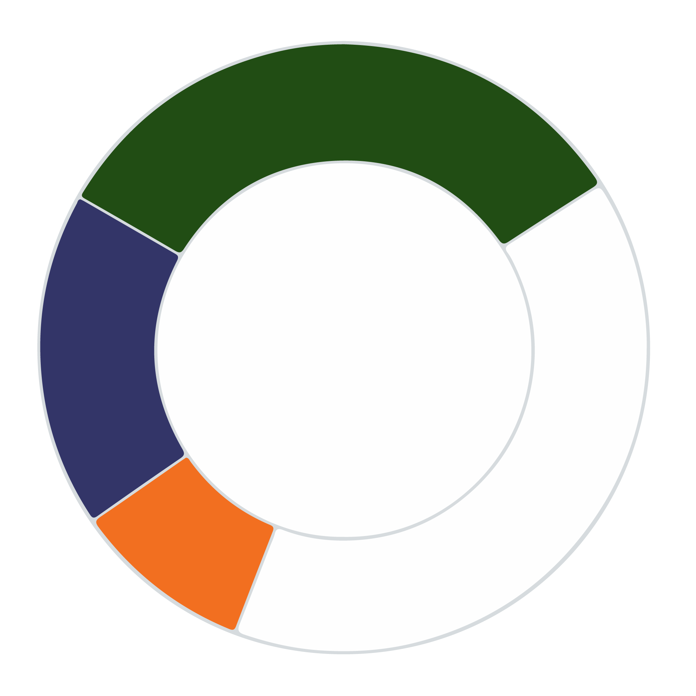
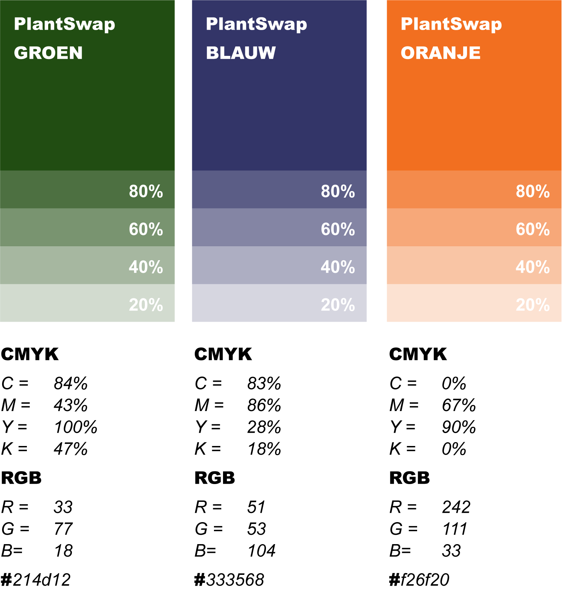
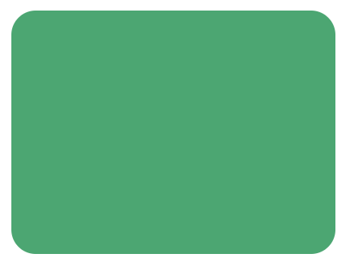
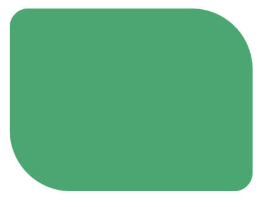
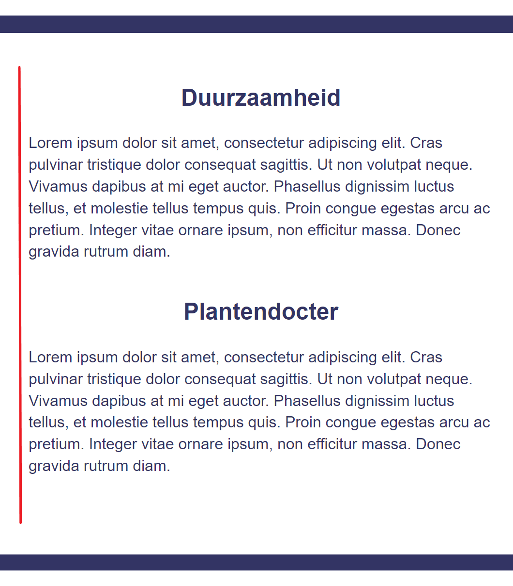
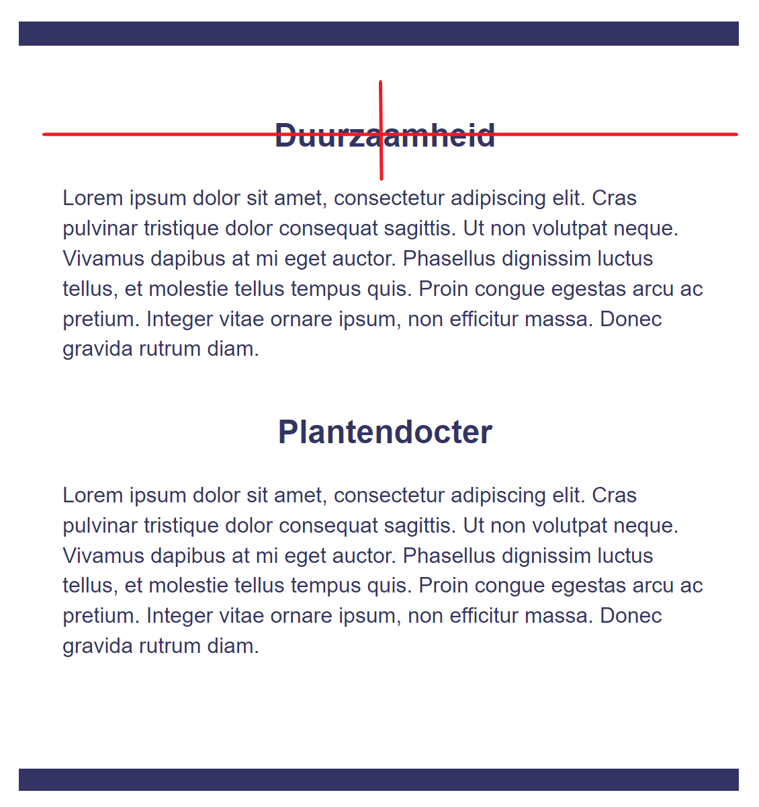

Logo

Plantswap Logo
Het logo zorgt ervoor dat de bezoekers weten...
Het logo moet duidelijk zichtbaar en goed leesbaar zijn.
Voor het Plantswap logo is de letterstijl van het logo van Buurtcampus Oost aangehouden.
Hierdoor blijft Plantswap voor bezoekers herkenbaar als project van Buurcampus Oost.
Om het logo beter te laten aansluiten bij het planten thema, is gekozen voor de kleur groen (#224D12)
Bij desktop gebruik
Logo
De aanbevolen minimum grootte voor het plantswap logo op desktop is … pixels hoog.
Favicon
Het icoon dat in het tabblad zichtbaar is laat … zien.
Bij mobiel en applicatie gebruik
Logo
De aanbevolen minimum grootte voor het plantswap logo op mobiel is … pixels hoog.
Hoe kan ik het logo gebruiken op verschillende achtergronden?
Dit is de richtlijn en een aantal voorbeelden voor het toepassen van het logo op verschillende achtergronden
Niet doen
Vertel hoe dingen vooral niet toegepast moeten worden.
Web integratie
Screen reader ondersteuning
Een website die toegankelijk is voor alle gebruikers is belangrijk voor Buurtcampus Oost en dus voor project Plantswap.
Zorg daarom altijd dat het logo gecombineerd wordt met een boodschap die hardop wordt voorgelezen door een screen reader.
Kleur
Kleuren brengen onze merkpersoonlijkheid en waarden over, maar helpen gebruikers ook om door de interface te
navigeren. De juiste combinatie van kleuren kan van invloed zijn op hoe ze zich voelen, denken en gedragen. Zie
hieronder meer informatie over ons kleurgebruik.

Groen, blauw, wit en oranje vormen het kernkleurenpalet van de PlantSwap. We gebruiken ze voornamelijk voor
achtergronden, inhoud, om belangrijke elementen of oproepen tot actie te benadrukken.

Responsive bij lagere resoluties
Interactieve Elementen
Wel doen
Maak van de tab/menu een button die in en uitgeschoven kan worden.
Behoud grofweg dezelfde layout van de website
Niet doen
Behoud niet de hele nav, hierdoor neemt het te veel ruimte in.
Maak niet een volledig andere layout zodat het niet een heel andere website is op lagere resoluties, het moet
consistent blijven
Layout
Wel doen
Maak de ruimte die de afbeeldingen innemen kleiner, verwijder zonodig een aantal afbeeldingen
Niet doen
Meerdere afbeeldingen naast elkaar zetten in de breedte, dit kan ervoor zorgen dat de pagina niet genoeg ruimte
heeft
(afbeeldingen maken een te groot deel uit van de
pagina).
Beeldgebruik
Header
Wel doen
De meeste afbeeldingen zullen van stekjes/planten zijn. Verder zal er veel gebruik gemaakt word van groene
kleuren en de kleuren die passen bij de huisstijl.
Verder word er gebruik gemaakt van een one - value border radius:
border-radius: 15px;

Niet doen
We maken geen gebruikt van two, tree of four values. Dit is dat je bepaalde hoeken wel afrond, en sommige
vierkant laat. Het volgende voorbeeld
is een two values border-radius:

Typografie
Basis Text
Grumpy wizards make a toxic brew for the jovial queen.
Highlighted Text
Grumpy wizards make a toxic brew for the jovial queen.
Text-Alignment

Normale text dient links uitgelijnd te worden, met een maximale regellengte van 30rem
Headings

Headings dienen gecentreerd boven text of elementen geplaatst te worden.
| Heading |
h1 |
h2 |
h3 |
h4 |
h5 |
h6 |
| Size |
32pt |
26pt |
22pt |
20pt |
18pt |
16pt |
Headings dienen volgens semantische volgorde de aangegeven groottes te hebben.
-
Duurzaamheid
-
Duurzaamheid
-
Duurzaamheid
-
Duurzaamheid
-
Duurzaamheid
-
Duurzaamheid
Icons
Elk icoon is gekozen om de bedoeling te communiceren en navigatie te vergemakkelijken. Ze
kunnen een opdracht, een bestand, een contactmethode, of een verzorg symboliseren voor de plantjes. Ze worden
ook gebruikt om algemene acties weer te geven, zoals navigatie en sociaal media symboliseren.
Strook van de icons is: solid 3px


.png)